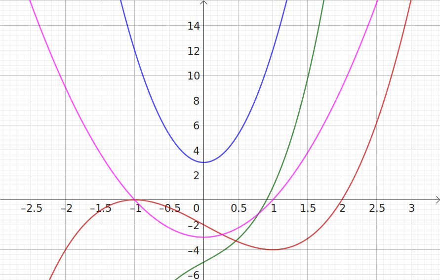

DS : dérivées et primitives -- A
Prénom NOM :
Dérivées (6 points) : Calculer les dérivées des fonctions suivantes :
-
\(f(x) = \dfrac{4}{3}x^3 - 2x^2 - x + 1 \)
\(f'(x) = \)\(f'(x) = 4x^2-4x-1\) -
\(g(x) = \dfrac{5}{x}-x^2 \)
\(g'(x) = \)\(g'(x) = \dfrac{-5}{x^2}-2x\) -
\(h(x) = 3x^3\times\sin(x)\)
\(h'(x) = \)\(h'(x) = 9x^2\sin(x)+3x^3\cos(x) = 3x^2(3\sin(x)+x\cos(x))\) -
\(k(x) = \sin(2x)+5\cos(3x)\)
\(k'(x) = \)\(k'(x) = 2\cos(2x)-15\sin(3x)\)
Primitives (4 points) : Déterminer une primitive pour chacune des
fonctions suivantes
:
-
\(f(x) = 3x^2+2x+10\)
\(F(x) = \)\(F(x) = x^3+x^2+10x\) -
\(g(x) = \cos(x) - \dfrac{4}{x^2} \)
\(G(x) = \)\(G(x) = \sin(x) + \dfrac{4}{x}\) -
\(h(x) = 3\sin(4x)\)
\(H(x) = \)\(H(x) = \dfrac{-3}{4}\cos(4x)\)
Tourner SVP
Problème 1 (3 points) : On étudie la fonction définie sur ]-∞;+∞[ par
\(f(x) = x^3+3x-5\)
-
Calculer \(f'(x)\) pour tout \(x\) réel :
\(f'(x) = \)\(f'(x) = 9x^2+3\) -
Expliquer pourquoi on a toujours \(f'(x)>0\) :
\(f'(x) = 9x^2+3\) : un carré est toujours positif (ou nul) ; en ajoutant 3 l'expression \( 9x^2+3\) est donc toujours strictement positive. -
Que peut-on en déduire sur les variations de \(f\) ?
\(f'(x) = 9x^2+3\) est toujours strictement positive, donc \(f\) est strictement croissante (principe de Lagrange).
Problème 2 (4 points) : On étudie la fonction définie sur ]-∞;+∞[ par
\(g(x) = x^3-3x-2\)
-
Calculer \(g'(x)\) pour tout \(x\) réel :
\(g'(x) = \)\(g'(x) = 3x^2-3\) -
Calculer \(g'(-1)\) puis \(g(1)\) et enfin \(g(0)\) :
\(g'(-1)=0\) ; \(g(1)-0\) ; \(g(0)=-3<0\) -
Compléter le tableau de signe de \(g'(x)\) et variation de \(g\) suivant avec +, -, 0 puis ↘ et ↗ (inutile de calculer les max / min sauf pour vérifier) :
\(x\) \(-∞\) \(~~~~~~~~\) \(-1\) \(~~~~~~~~\) \(1\) \(~~~~~~~~\) \(+∞\) \(g'(x)\) \(+∞\) \(g\) \(-∞\) \(x\) \(-∞\) \(~~~~~~~~\) \(-1\) \(~~~~~~~~\) \(1\) \(~~~~~~~~\) \(+∞\) \(g'(x)\) \(+\) \(0\) \(-\) \(0\) \(+\) \(0\) \(+∞\) \(g\) \(↗\) \(↘\) \(↗\) \(-∞\) \(-4\)
Problème 3 (2 points) : Retrouver les courbes des fonctions utilisées
dans l'exercice précédent et indiquer leur nom distinctement sur la figure : \(f\) ; \(f'\) ; \(g\) et
\(g'\).

Problème 4 (3 points) : chute des corps :

Un objet lâché (sans vitesse initiale, en négligeant la résistance de l'air) sur Terre au bord d'un précipice subit l'accélération \(a\) (en m/s²) de la pesanteur : sa vitesse \(v\) (en m/s, dirigée vers le bas) augmente pendant que sa hauteur de chute \(h\) (en m) augmente conjointement en fonction du temps \(t\) (en secondes).
-
On sait que : \(h'=v\) et que \(v'=a\), ce que l'on peut noter :
\(
h(t)
\stackrel{\frac{\textrm{d}}{\textrm{d}t}}{\longrightarrow}
v(t)
\stackrel{\frac{\textrm{d}}{\textrm{d}t}}{\longrightarrow}
a(t)
\)
.
Sachant que sur Terre : \(a(t) = 10\), compléter les expressions de h(t) et de v(t) en utilisant vos connaissances sur les dérivées :\( h(t) = 5\ldots ~~ \stackrel{\frac{\textrm{d}}{\textrm{d}t}}{\longrightarrow} ~~ v(t) = \ldots ~~ \stackrel{\frac{\textrm{d}}{\textrm{d}t}}{\longrightarrow} ~~ a(t) = 10 \)\( h(t) = 5t^2 \stackrel{\frac{\textrm{d}}{\textrm{d}t}}{\longrightarrow} ~~ v(t) = 10t ~~ \stackrel{\frac{\textrm{d}}{\textrm{d}t}}{\longrightarrow} ~~ a(t) = 10 \) -
Déterminer la vitesse et la distance de chute de l'objet au bout de 2 secondes de chute.
\(v(2) = 20\)m/s et \(h(2) = 20\)m . - En combien de temps l'objet parcourt-il 300m de chute (arrondir au centième) ?
On résout \(h(t) = 300\), d'où \(t = \sqrt{60} = 7{,}75\).